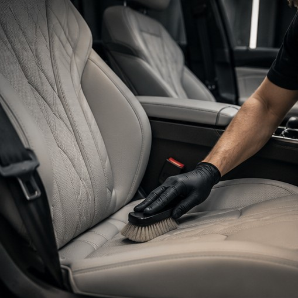

01 / CLEAN
Детейлінг-мийка та деконтамінація
Багатофазне очищення кузова, коліс і важкодоступних зон. Видалення стійких забруднень та підготовка поверхні до подальшого догляду.
Переглянути вартість ↗ЩО МИ РОБИМО
Від регулярного догляду до комплексного відновлення та довгострокового захисту.
01 / CLEAN
Багатофазне очищення кузова, коліс і важкодоступних зон. Видалення стійких забруднень та підготовка поверхні до подальшого догляду.
Переглянути вартість ↗
02 / INTERIOR
Глибоке очищення текстилю, шкіри, пластику та скла. Делікатний догляд за матеріалами інтер’єру й відновлення охайного вигляду.
Переглянути вартість ↗
03 / RESTORE
Корекція лакофарбового покриття, усунення дрібних дефектів і відновлення глибини кольору. Відновлення прозорості фар.
Переглянути вартість ↗
04 / PROTECT
Захисні покриття для кузова та скла, локальний, передній або повний захист PPF-плівкою. Рішення під стан автомобіля та очікування власника.
Переглянути вартість ↗
05 / MOBILE
Тонування скла, детейлінг двигуна, догляд за мотоциклами, підготовка авто до продажу та виїзний догляд для окремих послуг.
Замовити консультацію ↗